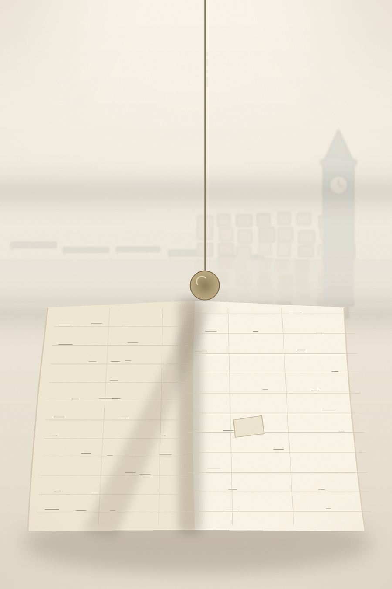

沈砚东街记录员（兼换页）
外在特征深灰外衫 袖口沾墨 走路快
核心动机查清自己每天清晨写掉的那一格到底是什么 以及为什么他记得昨天有字却不记得是什么字
秘密五年前他一天里写下过第二条 让第一条（写着一个名字）当场消失 他撕下那页一角留着 却不记得为什么留
语言习惯一句话只说一半 剩下半句用动作代替 回答前先纠正对方的用词
随身道具铜钥匙（档案柜钥匙 挂腰间）
硬设定关联H1 职务要求他每天必须先写掉那一格

一部关于条目、钟声与名字的短篇。三章，约 6697 字，附设定集、人物小传、伏笔表、连续性校对与名物索引。
开始阅读 →周一清晨的东街，长桌上留着一层薄水。抹布刚过去，木纹还亮着，边缘一圈已经干了。
沈砚把账册摊在桌心，铜尺横压在上缘，两只手把纸角对齐。换页是他的活：旧页收进硬皮夹，新页铺平，四角压住，然后在天头写下当天的日子。
这一笔下去，他今天的条目就用掉了。
东街的人来得比他晚。日头到长桌中段，人才陆续坐下，各自占一格，把袖子往上推。
有人写「今日不与人争」，写完就把袖子放下来。有人写「把西边那扇窗开着」，字很小，写得很慢。有人在格子里只落一个字，落完站着看一会儿，才走。
每一格都写得满满当当。写完的人不肯立刻走，站在桌边看那一行字，像在看一件刚放下的东西。
城里的人都只有一格。写完这一格，再写第二笔，第一笔就自己没了。不是被人划掉，是没了，纸面上连一道痕都不留。
记录员也一样。只是他这一格写得比谁都早。天没亮就写完，等别人来的时候，他已经是个没有条目的人。
纸角对齐的时候，他看见昨天那一页的最后一格是空的。
不是划掉的空。划掉有痕，横着一道，纸背会陷下去，指腹一摸就知道。这一格平得像从来没有写过，连墨气都没有。
他把手掌摊在那一格上，量了一下。一格两指宽，一指高，和他昨天见过的一样。格子边上有一点点青，是压过铜尺留下的铜绿。
沈砚把手收回来，在桌沿上蹭了一下。
他记得昨天那一格里有字。
他不记得是什么字。
长桌尽头站着一个人。
浅色围裙，围裙下摆有一道洗过很多次也没洗掉的灰。手指细，指腹上一层纸痕，像被纸磨出来的茧。她把两只手垂在身前，没有坐下的意思，也没有走的意思。
纸街的抄写员，阿桉。
「你在等什么。」沈砚说。
「等你写完。」她说话慢，一个字一个字往外放，像在抄一页不能错的纸。
「今天只有一格。」
「我知道。」
「知道还等。」
「等你写完，我才好走。」她说，「昨天我也是这么等的。」
沈砚没接话。他把铜尺挪开一寸。
纸角翘起来，露出下面压着的一小片旧纸。边缘毛糙，是从别的账册上撕下来的，撕口不齐，一边还带着纤维。上面只剩半个字。
不是印上去的，是写上去的。墨色旧得发灰，笔画断在正中。
半个「桉」。
他把铜尺压回原处，动作很轻，像怕把那半个字碰掉。
「你的纸上压着什么。」阿桉说。
「没压什么。」
「铜尺下面有边。」
「纸街的纸都带边。」他说。
她没有再问。她把手往围裙里收了收，往后退了半步，退到长桌的阴影外面去。
沈砚把新的一页写完。天头写完，他停了停，又在新页的第一格落下四个字：今日已换。
这是他的条目。这一笔落下去，昨晚那一格就再也不会回来了。
对面的人抬头看了他一眼，又低下去。长桌另一头有人放下笔，笔杆碰到桌面，声音很轻，顺着桌上没干的水痕一路滑到尽头。
沈砚把铜尺挪开，把那小片旧纸捏起来，对着窗口的光看。
半个字是「桉」。
纸的背面有一道压痕，是划掉的痕，横着，很深，把纸都压薄了。有人在划这一条的时候用了很大的力气，或者用了很久。
他把旧纸折了两折，放进袖口。
长桌尽头空了。刚才站人的地方，地砖上有一小片更深的颜色，是鞋底带进来的水。
钟楼那边没有声音。这个时辰不该有声音。
沈砚收起铜尺，把腰间的铜钥匙按了按，让它贴着胯骨，不响。
周二下午的纸街，墙上是纸，一层压一层，边角都翘起来。风从街口进来的时候，整面墙一起响，像很多人在同时翻页。
沈砚走进去，没有人抬头。
街角堆着废页，一捆一捆用麻绳勒住，绳结打在同一个位置，勒得纸边发白。废页是不许带出去的，每半个月由寄存处的人来收一次。捆得松的会被风吹开，散一地，谁都能看见上面写了什么，谁也不看。
抄写员坐在矮桌前，把上周的条目一条一条挪到新账册里。挪的时候左手压住旧页，右手落笔，手腕悬着，不碰纸。
被划掉的那些不挪。划掉的一条留在旧页上，一道横线压过去，像给一行字盖了被子。挪的时候抄写员会把它跳过去，手上的动作不停，眼睛也不多看。
阿桉在最里面那张桌子。
她抄得很慢。别人抄一页，她抄三行。每抄完一条，她把竹笔在指腹上转半圈，然后翻到自己账册的最后，划掉一条。
划的时候她不看纸。
「抄一条，要划掉一条。」沈砚说。
「抄一条，我自己就少一条。」她没抬头。
「少哪一条。」
「最旧的那一条。」她把笔尖在纸边点了一下，「规矩不问内容，只问笔数。」
「你划掉的是谁的。」
「我的。」她说，「我账册上的，都是我的。」
沈砚绕到桌子这一侧。她的账册摊着，纸很薄，能看见背面透出来的墨。最后一格写着一个名字。
「沈砚」。
两个字。写得很正，笔画起头比收尾重。
「那一格是我。」他说。
「是。」她说。她说完这个字，等了很久，才说下一句：「我蘸了三次墨才写正。」
「你为什么抄我。」
「因为我只有一次。」她把账册往自己那边挪了一寸，「抄别人的，一辈子只能一次。我挑了最不会来问的人。」
「我来了。」
「你来了。」她把手按在账册上，先把它合上，「已经晚了。」
沈砚从袖口把那半张旧纸取出来，放在桌角，没有推过去。
「上面有个桉字。」他说。
她的手指停在账册封面上，没有翻。
「纸街的纸，撕了都一个样。」她说。
「撕口不一样。」
「撕口也是纸。」她低下头，「你收着吧。收着比问出来好。」
风又进来，墙上的纸一起响。沈砚把旧纸收回袖口。他往外走，走到门口回头看了一眼。她已经低下头去抄下一条。竹笔的笔尖在纸上走得很稳，一行到底，没有停过一次。
周三上午的钟楼街，旧钟楼在地面投下一道长影，从楼脚一路铺到街心，斜着，末端压在石缝上。
沈砚到的时候，钟叔在擦钟。
钟楼的钟被无缘无故擦过一遍，铜是亮的，街面上却没有声音。钟叔擦得很仔细，旧绒布沿着铜边一圈一圈走，走到指针那里绕过去，像绕开一个不能碰的人。
钟面朝街，铜上有一层薄绿。十二个刻度，有一个磨得比别的亮，亮得像常被人摸。
指针斜着，停在第七与第八个刻度之间，一动不动。钟在楼里，只露出一个摆锤，垂在暗处，绳子上打了一个结，结打得很高。
「钟为什么停着。」沈砚说。
「它没停。」钟叔说，「它在等。」
「等什么。」
「等有人做一件收不回去的事。」
「上一次是什么时候。」
「你上次来问的时候，」钟叔把旧绒布翻了个面，「影子还短一寸。」
沈砚低头看影子。影子的末端今天压在第三道石缝上，斜着切过一块翘起的石角。
他蹲下去，从袖口抽出铜尺，横在影子的末端。
「你量它做什么。」钟叔说。
「看它长没长。」
「长了。」
「我看不出来。」
「你看不出来，是你忘了。」钟叔说，「影子天天长，人天天忘，两样都停不下来。」
沈砚把铜尺收回来，尺边压到袖口里那半张旧纸，纸角刮了他一下。
「五年前。」他说。
「不问。」钟叔说。
「我还没问。」
「你脸上写着。」钟叔把旧绒布叠成四方，压在钟座底下，「问出来的东西，你要是收不住，钟会替我回答。」
「钟不响。」
「今天不响。」钟叔说，「今天没有人做收不回去的事。」
沈砚站起来，往街心走了几步。影子在他脚前，一直铺到钟楼的墙根。
他站着没动，等那个声音。
铜没有响。街很安静，连风都停在两条街之间。
他把手插进袖口，摸到那半张纸，纸的边缘比昨天软了一点，是被人反复摸过的那种软。
| 人物 | 章末位置 | 随身道具 | 状态变化 | 时间点 |
|---|---|---|---|---|
| 沈砚 | 东街（长桌东头，收尺离开） | 铜钥匙（腰间，未离身）、铜尺（袖口）、半张旧纸（袖口，已折两折） | 新页已换，第一格写下「今日已换」，当日条目已用尽 | 周三 巳时 |
| 阿桉 | 纸街（最里侧矮桌） | 磨短的竹笔（围裙内袋）、自己的账册（最后一格为「沈砚」） | 未承认半张纸的来历；账册被沈砚看见而不肯展开 | 周三 巳时 |
| 钟叔 | 钟楼街（钟座旁） | 旧绒布（压在钟座底下） | 仍未解释钟为何停；第一次说出「你上次来」 | 周三 巳时 |
| 小满 | 未出场（寄存处） | 布包、木牌一叠、一枚铜钥匙 | 未出场，仅由半张旧纸的撕口暗示其存在 | — |
本章实际字数： 2300 字（正文，不含标题与本表） 对白： 54 处
周四傍晚，寄存处门口有人排队。
沈砚以前没见过这个。寄存处在街尾，木门，门上一扇小窗，窗上有一层灰。门上的锁在最下面，一把横闩，闩上落着新灰。他到的时候，队伍已经贴住了墙。
五六个人，都靠墙站着，没有人说话，也没有人看门。他们看的是自己的鞋，或者砖缝。
有人手里捏着一张纸，折过很多次，纸角起毛，捏得发白。有人把两只手抄在袖子里，站得比墙还直。最靠近门的那个人，脚边放着一只空木盒，盒盖开着，里面垫了一层旧布。
一个短发的人从队伍另一头过来，低着头，肩上挎着一只布包，包口用一根旧绳系着。她手里有一叠木牌。
纸街的规矩他懂，东街的规矩他懂。寄存处的规矩他不懂，因为寄存处只在周五傍晚开，而这天是周四。
「排队做什么。」沈砚说。
「等门开。」靠墙的一个人说。
「今天不开。」
「周四。」短发的人说。她说话的时候先报了日期，才报自己：「小满，寄存处学徒。」
「周四为什么有人站。」
「站周五的位置。」她把一块木牌递到他手里，「十七号。靠墙站。」
木牌是温的，上面有指印，不是他的。
「我不取东西。」
「不取也可以站。」她说，「你上周站的是这个位置，靠墙第三块砖。」
「我上周没来。」
「窗子看见了。」
沈砚把木牌翻过来。背面刻着一道浅槽，槽里嵌着灰。他把木牌握紧，木头贴着掌心的那道旧茧。
「门后有没有写着砚字的盒子。」
小满抬起眼，很快又低下去。
「盒子按名字排。」她说，「有。」
「里面是什么。」
「划掉的东西。」
沈砚往前一步，手按在门板上。
门不动。闩在最下面，锁着，锁鼻子上挂着一层薄锈。他把手往下移，摸到闩，闩是凉的，凉得比街上的石头还硬。
「别推。」小满说，「推了明天要多擦一遍。」
「里面不能进。」
「周五傍晚能进。」她说，「其余时间，门是锁着的。规矩不是我定的，我只是每天来擦门。」
「每天来擦门，也算进来。」
「我没进来。」她说，「我擦外面。」
她把布包往肩上提了一下。包口张开一寸，露出里面一截铜光。
一枚铜钥匙。齿的形状他认得，齿有三道，第三道短，和他腰间那把一样。
「你的钥匙。」沈砚说。
「不是我的。」她说着把包口按住了，按得很快，快得像在关一扇门。
沈砚退了半步，把木牌十七收进袖口，和那半张旧纸放在一起。两样东西一样薄，隔着纸他能摸出木牌的槽。
风从街尾进来，把队伍最前面那个人的衣角吹起来。没有一个人动。
周五上午的纸街，抄写员在收拾桌子。
墙上的纸少了一层，露出下面的木板。木板上有钉子孔，一排一排，很密。阿桉坐在最里面那张桌子，账册摊开，竹笔搁在手边，笔尖朝外。
她的账册比别人的厚一倍。纸边齐得像被压过很多年，封面四角都用布包过，包布的针脚很密。别人的账册翻两下就到底，她的翻到一半，纸还立得住。
沈砚在她对面坐下，把木牌十七放在桌上。
「替人抄一条，你能得什么。」他说。
「得一条。」她说，「抄进来的那条，就是我的。」
「你划掉的呢。」
「也是我的。」
「你划掉过自己的名字吗。」
她停了很久。风从街口进来，墙上的纸响了一阵，落下去。
「划过一次。」她说。
「什么时候。」
「不记得了。」她说，「划掉的东西，我这边也不留。留在纸上，纸上就只有一道横线，横线不告诉我是谁。」
沈砚把木牌往前推了半寸。
「半张纸。」他说，「上面有个桉字，背面有一道划痕，压得很深。」
她的竹笔在指腹上转了半圈。
「那半张纸，是从我账册上撕的。」她说。
「你自己撕的。」
「撕的人不是我。」她把账册翻到最后一页，指着右上角，「我翻到的时候，这里已经少了一个角。撕口齐，是从外往里撕的，不是自己撕的。自己撕，手会抖。」
沈砚看着那个缺角。缺角的形状和他袖口里那半张纸对得上，一边带纤维，一边是刀口一样的直。
「谁撕的。」
「不知道。」她说，「能进纸街的人太多。能翻我账册的人，不多。」
「有几个人。」
「两个。」她说，「一个是你。一个是替我收纸的。」
「收纸的是谁。」
她没有答。她把账册合上，两只手压在封面两边，压得很平。
「你今天来，是为了问这个，还是为了周五。」她说。
「两样。」
「周五你只能取一件。」她说，「取了要写。」
「写什么。」
「写理由。写在你自己账册上。」她抬起头看他，「你今天写过几条了。」
沈砚没有答。
阿桉从桌上拿起竹笔，把笔递过来，笔杆朝他的方向，笔尖朝自己。
「你写字快。」她说，「笔要短。」
「我用不惯。」
「用不惯才写得慢。」她说，「慢一点。别写第二条。」
沈砚接过竹笔。笔杆上有一层汗磨出来的亮，握在手里比他的铜尺轻。
他站起来的时候，阿桉把账册往自己那边挪了一寸，挪得很轻，像怕惊动纸上的字。
周五傍晚，寄存处的门开了。
门只开了一半，一扇门板贴着墙，另一扇留着一条缝，缝里是黑的。小满站在门内半步的位置，手里捧着木牌，一个一个念号。
「十七。」
沈砚把木牌递过去。她接过去，翻过来看了一眼背面的槽，然后往门里走，走到第三排架子前停下。
架子上一格一格都是木盒，盒面上写着名字。墨是新的，字是别人的。
她取下写着「砚」的那一只。
盒子很小，比手掌大一点，木头没有上漆，边角磨圆了。她把盒子递到门槛上，没有递出门外。
「在这里开。」她说，「开了就要写。」
「写在哪。」
「你自己的账册。」她把一支笔放在门槛上，「今天你只写过一条，还写得下。」
沈砚打开盒盖。
里面是一张对折的纸，纸的右上角少了一块，撕口齐。他展开。
是他自己的字。起笔重，收尾轻，写得比现在快。
第一笔：阿桉。
第二笔：今日已换。
下面还有一行更小的字，墨色比上面深，是后补的：
换页不能停。明日还有人来写。
他拿着那张纸，手没有抖。街上没有风，纸的边角也不动。
「第二笔写下去，第一笔就没了。」小满说，「你那天写得很快。」
「你怎么知道。」
「我不在。」她说，「窗子看见了。」
阿桉站在门外三步远的地方，两只手垂着。钟叔站在街对面，旧铜色外套，手套戴得很正。
「取了要写。」小满又说了一遍，「不写，盒子要放回去。」
「我写不完一句。」沈砚说。
「写两个字就够。」阿桉说。
沈砚把账册摊在门槛上。门槛比桌面矮，他得弯下腰，把重心放在膝盖上。新页的天头是他清晨写的四个字。第一格里，四个字还干着，收尾有一点毛。
他把笔尖按在第一格的下面。笔尖停住，纸上洇出一个很小的墨点。
笔是阿桉的，竹杆短，握着正好。
他写下两个字。
阿桉。
第一格的字在他眼前淡下去。不是被划掉，是没了，纸面一下就平了，连墨气都收干净。天头那一行空出来，像从来没有写过。
钟楼那边响了一声。
只一声。铜的声音从钟楼街滚过来，滚过纸街的屋脊，落在寄存处门口的石板上，压住所有人的呼吸。
钟叔在街对面摘下一只手套。
沈砚合上账册。封面很凉，指印留在上面，一会儿就淡了。
小满把门板往里带了带，门缝只剩一条线。她没有看他，只是把手里那叠木牌重新数了一遍，从最上面数到最下面，又数回来。
他低头看袖口。那半张旧纸和那张取出来的旧条目贴在一起，两张纸一样薄，一张的撕口正对着另一张的缺角。
| 人物 | 章末位置 | 随身道具 | 状态变化 | 时间点 |
|---|---|---|---|---|
| 沈砚 | 寄存处门外（门槛前） | 铜钥匙（腰间）、铜尺（袖口）、半张旧纸（袖口）、五年前的旧条目（袖口）、阿桉的竹笔（手中）、木牌十七（已交回） | 当日第一格「今日已换」消失，账册今日仅余「阿桉」二字；换页凭据灭失 | 周五 酉时 |
| 阿桉 | 寄存处门外（三步远） | 竹笔（已借出给沈砚）、自己的账册（未随身，留在纸街桌上） | 把唯一一次抄写机会用在沈砚的名字上；借出竹笔 | 周五 酉时 |
| 钟叔 | 寄存处街对面 | 旧绒布（钟座下）、手套（一只已摘下） | 主动到场，摘手套 | 周五 酉时 |
| 小满 | 寄存处门内半步 | 布包（内有木牌与铜钥匙）、木盒「砚」（已空） | 取出木盒，念号，收笔 | 周五 酉时 |
本章实际字数： 2202 字（正文，不含标题与本表） 对白： 78 处
周五亥时，东街只剩一盏灯。
长桌收了半边的水，另外半边没人擦，水痕干了，留下几道白。沈砚坐在桌心，账册摊在面前，铜尺压在旁边，没有压纸。
他翻开今天这一页。
天头空着。第一格是他写的两个字。
阿桉。
他往下看。这一页只有这么多。昨天那一格没有回来，前天那两格也没有回来。
他往前翻。上周的页被收进硬皮夹了，夹子立在档案柜里，柜门锁着，锁上挂着一层薄灰。翻不到的地方，就只剩他记得的部分。
他数自己记得的日子。一周五天，每天早上写四个字，写完就走。走进纸街，走进钟楼街，走回来。
他从来没数过这一页上到底留下过什么。
档案柜那边有一声轻响。是硬皮夹的搭扣，被人从里面按了一下，又松开。
钟叔站在灯外的暗处，旧铜色外套，两只手套戴得端端正正。
「你把钥匙给我。」钟叔说。
「凭什么。」
「凭你今天写了两笔。」
「你怎么知道。」
「钟响了。」钟叔说，「它只在这个时辰响过两次。上一次，是我。」
沈砚把钥匙按在桌上，没有推过去。
「你写了什么。」
「一个名字。」钟叔说，「和你一样。」
「后来呢。」
「后来我把钥匙交了。」钟叔往前走了两步，站到灯的边缘，「交钥匙的人不问名字，只数格子。我今天数了你的格子，少一格。」
「少的那一格是我的活。」
「是你的凭据。」钟叔说，「换页要在第一格留字。没有这四个字，档案里今天就没有换过页。没有换页，就没有记录员。」
沈砚低头看那两个字。墨已经干了，收尾有一点点毛，是竹笔留下的。
「明天早上账册要收进档案柜。」他说。
「收。」钟叔说，「你今天换过页。你自己知道。」
「档案不知道。」
「档案不知道，就不算。」钟叔说，「这城只记写下来的。」
沈砚把手从钥匙上拿开，又按回去。
「你当年为什么不写第二笔。」他说，「我是说，你为什么不把第一笔留住。」
钟叔没有答。他把左手的手套往上拉了拉，然后摘下来。
掌心有一道墨痕。横着，很长，从虎口一直划到腕子，颜色旧得发灰，边缘已经长进皮里。
「笔放下就洗不掉了。」他说，「写第二笔的时候，手会出汗。汗把墨带进纹里，洗了五年，还在。」
「你写了谁的名字。」
「我不记得了。」钟叔把手套戴回去，「我只记得我写的时候，手很稳。」
沈砚看着那只手套。手套的虎口处有一小块磨薄了，薄到能看见里面的线。
「你等了五年。」他说。
「五年。」钟叔说，「五年里我每天早上来一趟，看一次影子。影子长了，我就知道又过了一年。钟没响，我就知道我还得等。」
周五子时，纸街的灯还亮着。
墙上的纸被收走大半，露出钉孔。阿桉在最里面那张桌子，账册摊开，膝上压着一块镇纸。她抄东西的时候，肩膀不动，只有手腕在动。
灯油快见底了，灯芯烧出一截黑，火苗贴着芯子走。她把灯往自己那边挪了半寸，好让光落在纸上。
沈砚把竹笔放在桌角。
「还你。」
「留着。」
「我用不着了。」他说，「我今天写完了。」
阿桉的笔尖在纸上停了一下，停得很短，然后继续走。
小满从街口进来。她没有背布包，两只手空着，走到桌边站住，低着头。
「纸是你撕的。」沈砚说。
「是我。」
「你怎么进纸街的。」
「收纸。」她说，「纸街每半个月把废页交给寄存处，收纸的人是我。」
「你翻她账册。」
「翻了最后一页。」小满说，「翻之前我数了三遍页数，撕的时候数了三遍，撕下来又数了三遍。」
「你为什么撕。」
「因为盒子里那张纸，你取不出来。」她抬起眼，很快又低下去，「除非有人先给你留半个字，让你知道那盒子跟你有关系。你不来问，盒子就一直锁着，锁到没人记得写的是什么。」
阿桉把笔放下。
「你撕的是我的名字。」她说。
「撕的是半个。」小满说，「另外半个我给你留着。」
「在哪。」
「在他袖口里。」
三个人都没有说话。街口的风进来，把钉孔吹得响，是一种很细的、像针尖过纸的声音。
阿桉把账册翻到最后一页，推过来。
最后一格还是那两个字。
沈砚。
「你今天写了两个字。」她说，「我抄下来了。」
「什么时候。」
「钟响的时候。」她说，「我在门外，听见就抄了。抄的时候没划。」
「不划会怎样。」
「会多一条。」她说，「我这本账册，一页一页都写满了。多一条，就有一条要掉出去。掉出去的那条，就再也没有了。」
「掉哪一条。」
「最旧的。」她把手指按在封面边上，「最旧的那条是我自己的名字。我划过一次，第二次划，就真的没有了。」
沈砚把账册往她那边推回去，推到一半停住。
「别划。」他说。
「那你告诉我划哪一条。」
他没有答。他把账册推到她手边，收回手，把手放在桌上，掌心朝上，什么也没有。
阿桉低头看着自己的账册，看了很久，然后把竹笔拿起来，翻到中间一页，划掉了一条。
划的时候她看了。
「划的是哪一条。」沈砚说。
「不告诉你。」她说，「反正不是今天这两条。」
周六卯时，天要亮了，钟楼街的影子淡得像一层水。
东街那边有木箱合上的声音，一声，很闷。账册被收进档案柜了。
沈砚站在钟楼底下，抬头看指针。指针停在某一个位置，斜着，指着街心。
钟叔在他旁边，手里捧着那块旧绒布。他把绒布摊开，布上有五道刻痕，用指甲划的，一年多一道。
「我从那年画起。」他说，「第一年，影子到这儿。今年，到这儿。」
「所以你说，影子还短一寸。」
「一年一寸。」他把绒布叠好，「我等了五年，影子长了五寸。钟一直没响，我就一直不知道我那天到底选了什么。」
「现在知道了。」
「现在知道了。」钟叔说，「你选的，和我不一样。你选的是名字，我选的是钥匙。」
小满从街尾过来，把木牌十七放进布包，绳口收紧。她走到沈砚面前，把布包往上提了提。
「里面的盒子我放回去了。」她说，「空的。」
「空了还放。」
「盒子要留在架子上。」她说，「不然下一个写着砚字的人来，会以为这城里没有过这个人。」
阿桉最后到。她走得很慢，账册抱在怀里，用围裙裹着。
她在他面前站住，把账册翻开，翻到最后一页，两只手托着，让他看。
最后一格是那两个字。墨是新的，写得很正。
「你的名字在我这里。」她说。
「能留多久。」
「留到我划掉它的那一天。」
「你会划吗。」
「不会。」她说完就低下头，把账册合上，裹回围裙里。
沈砚把腰间的铜钥匙解下来。钥匙在腰上挂了五年，铜面被衣服磨出一层亮，齿上有一点点弯。
他把它放在钟叔手里。
钥匙离手的时候是温的，落到钟叔手上，很快就不温了。
「钥匙你拿着也没用。」钟叔说。
「我知道。」
「你想来，就来。」钟叔把手套戴上，「钟不响，我也在。」
沈砚往街心走了几步。影子在他前面，一直铺到钟楼的墙根，末端压在第四道石缝上。
比昨天长一寸。
他站住，等那个声音。
铜没有响。
今天没有收不回去的事了。昨天那件，已经收不回去了。
他抬手摸了摸袖口。半张旧纸和那张旧条目还在里面，两张纸贴在一起，一样薄，一样凉。
天亮了。街上开始有人的脚步，从东街过来，绕过钟楼，往纸街去。
东街那边有人在擦长桌，水从桌子一头推到另一头。今天没有人来写条目，今天的页还没有换，档案柜里那只硬皮夹已经上了锁，钥匙挂在别人腰上。
沈砚把袖子放下来，往东街走。他走得很快，两只手空着。
| 人物 | 章末位置 | 随身道具 | 状态变化 | 时间点 |
|---|---|---|---|---|
| 沈砚 | 钟楼街（钟楼底下，往东街走去） | 铜尺（袖口）、半张旧纸与五年前的旧条目（袖口，未分离）、竹笔（已还给阿桉）、铜钥匙（已交出） | 交出档案柜钥匙，不再是记录员；账册今日仅「阿桉」二字；名字存于阿桉账册最后一格 | 周六 卯时 |
| 阿桉 | 钟楼街（钟楼底下） | 竹笔（已收回）、自己的账册（最后一格「沈砚」，另划掉中间一页的一条） | 收下竹笔；保留「沈砚」二字，声明不会划掉 | 周六 卯时 |
| 钟叔 | 钟楼街（钟楼底下） | 旧绒布（五道刻痕）、手套（已戴回）、铜钥匙（新收） | 接过档案柜钥匙，成为下一任换页人；说出五年前的真相 | 周六 卯时 |
| 小满 | 钟楼街（街尾过来，布包已系紧） | 布包（内木牌十七、铜钥匙一枚、木盒「砚」已归架） | 归还空盒至架上；收起木牌十七 | 周六 卯时 |
本章实际字数： 2195 字（正文，不含标题与本表） 对白： 89 处
| 项 | 数值 |
|---|---|
| 三章正文合计中文字数 | 6697 |
| 第 1 章字数 | 2300（阈值 800，达标） |
| 第 2 章字数 | 2202（阈值 800，达标） |
| 第 3 章字数 | 2195（阈值 800，达标） |
| 三章对白合计 | 221 处 |
来源：素材「01_世界观设定包.md」。本文件只做整理、编号与检查方法补写，不新增任何规则。凡设定包未载明者，一律标「待补充」，不自行编造。
账本城是一座架空校园城，居民不用货币，只用「条目」结算一切：每写下一条，就必须划掉另一条。城内有东街、纸街、钟楼街三条街，一座旧钟楼，一间只在周五傍晚开放的寄存处。
违反任一条即判「正文不通过」，三章逐条比对。
| 场所 | 特征（原文） | 在故事中的功能 |
|---|---|---|
| 东街 | 长桌连成一排，人们在这里写条目 | 公共账册所在，换页、写条目、交钥匙的场所 |
| 纸街 | 抄写员聚集，墙上是层层旧纸 | 抄写与保存的场所，阿桉的工作地 |
| 钟楼街 | 安静，地面有钟摆投下的长影 | 独处与试探的场所，影子长度即时间刻度 |
| 寄存处 | 木门、小窗、只在周五开 | 存放划掉条目的地方，木盒按名字归档 |
| 旧钟楼 | 指针停在某个位置，无人知道是谁停的 | 悬置的判决，钟响即宣判 |
| 序号 | 时间点 | 事件 | 本稿对应章节 |
|---|---|---|---|
| T1 | 周一清晨 | 公共账册换上新的一页 | 第一章 场景 1 |
| T2 | 周二下午 | 纸街的抄写员开始整理上周条目 | 第一章 场景 2 |
| T3 | 周三上午 | 钟楼无故被擦拭一遍，但钟没有响 | 第一章 场景 3 |
| T4 | 周四傍晚 | 寄存处门口第一次出现排队的人 | 第二章 场景 1 |
| T5 | 周五傍晚 | 寄存处开放，钟楼敲响一次 | 第二章 场景 2、3 |
| T6 | 周六清晨 | 公共账册被收进档案柜 | 第三章 场景 3（侧写） |
| 项 | 状态 | 处理 |
|---|---|---|
| 账册每页的格数 | 待补充 | 正文只写「最后一格」「第一格」，不给总数 |
| 谁定的这些规矩 | 待补充 | 全文不出现立法者，只出现「规矩」二字 |
| 钟停在哪一年 | 待补充 | 只写「停在某个位置」「指针没动」，不给年份 |
| 城外的世界 | 待补充 | 全文不出现城外，人物不谈离开 |
以下物件为叙事所需，均从设定包与样章中已有元素派生，不构成新规则，登记备查：
| 名物 | 派生来源 | 说明 |
|---|---|---|
| 铜尺 | 样章「压上铜尺」 | 记录员的压纸工具，兼作量影子的尺 |
| 铜钥匙 | 大纲示范行「手持铜钥匙」 | 档案柜钥匙，非寄存处钥匙，不违反 H2 |
| 木牌十七 | 设定包「寄存处…小窗」派生 | 排队取件的号牌 |
| 硬皮夹 / 档案柜 | 设定包「账册被收进档案柜」 | 存放旧页的容器 |
| 木盒（按名字归档） | 设定包「寄存处」派生 | 存放划掉条目的盒子，非新规则 |
四位人物，四种与规矩相处的方式。每人都绑定一条硬设定，全篇不出现第五位具名人物。
外在特征深灰外衫 袖口沾墨 走路快
核心动机查清自己每天清晨写掉的那一格到底是什么 以及为什么他记得昨天有字却不记得是什么字
秘密五年前他一天里写下过第二条 让第一条（写着一个名字）当场消失 他撕下那页一角留着 却不记得为什么留
语言习惯一句话只说一半 剩下半句用动作代替 回答前先纠正对方的用词
随身道具铜钥匙（档案柜钥匙 挂腰间）
硬设定关联H1 职务要求他每天必须先写掉那一格
外在特征浅色围裙 手指有纸痕 说话慢
核心动机让被划掉的名字至少有一处能活下来
秘密她的账册快满了 每替别人抄一条就要划掉自己最旧的一条 她已划掉很多条 其中一条是自己的名字
语言习惯说「规矩」不说「我」 一句话拆成两句说 中间留一次呼吸的长短
随身道具一支磨短的竹笔
硬设定关联H4 全城只有她能合法地把划掉的东西抄进自己的账册
外在特征旧铜色外套 总戴手套
核心动机等钟再响一次 好知道自己五年前到底选了什么
秘密他是前一任记录员 也曾在一天里写下第二条 他交了钥匙 留下手套 从此不碰笔
语言习惯只回答「等」和「不问」 把问题换成时间回答（你上次来 影子还短一寸）
随身道具一块擦钟的旧绒布
硬设定关联H3 钟只为不可撤回的选择响 他以等钟为生
外在特征短发 布包 常低头
核心动机把该还的东西还回去
秘密她替钟叔保管着一枚备用铜钥匙 半个月前又从阿桉账册上撕下半张纸 压进沈砚的换页里
语言习惯先说数字再说事（十七号 靠墙站） 不说「我看见了」 说「窗子看见了」
随身道具布包（内有木牌一叠与一枚铜钥匙）
硬设定关联H2 只在周五傍晚开门 门内的事门外看不见
| 姓名 | 沈砚 | 阿桉 | 钟叔 | 小满 |
|---|---|---|---|---|
| 沈砚 | — | 信任 | 未知 | 中立 |
| 阿桉 | 信任 | — | 中立 | 未知 |
| 钟叔 | 信任 | 中立 | — | 信任 |
| 小满 | 信任 | 中立 | 信任 | — |
取值仅为 信任 / 冲突 / 中立 / 未知，对角线为「—」。逐格判定依据见制作包 03附_人物关系矩阵说明.md。
共 27 条，全部由三章正文抽取。输入名称可高亮并跳转；点击条目可回到首次出现的章节。
| 名称 | 首现 | 释义 | 关联 |
|---|---|---|---|
| 沈砚 | 第 1 章 | 东街记录员，负责换页，随身铜尺与档案柜钥匙 | 阿桉、铜钥匙、铜尺、换页 |
| 阿桉 | 第 1 章 | 纸街抄写员，把划掉的条目抄进自己账册的人 | 沈砚、竹笔、抄写、半张旧纸 |
| 钟叔 | 第 1 章 | 旧钟楼看守，前一任记录员，总戴手套 | 旧钟楼、旧绒布、铜钥匙 |
| 小满 | 第 2 章 | 寄存处学徒，只在周五傍晚出现，管木牌与木盒 | 寄存处、木牌十七、木盒、布包 |
| 名称 | 首现 | 释义 | 关联 |
|---|---|---|---|
| 东街 | 第 1 章 | 长桌连成一排，公共账册所在 | 格、条目、硬皮夹 |
| 纸街 | 第 1 章 | 抄写员聚集，墙上层层旧纸，废页堆在街角 | 阿桉、抄写、竹笔 |
| 钟楼街 | 第 1 章 | 安静，地面有钟摆长影，影子长度即时间刻度 | 旧钟楼、钟叔 |
| 寄存处 | 第 1 章 | 街尾木门小窗，只在周五傍晚开门 | 小满、木盒、木牌十七 |
| 旧钟楼 | 第 1 章 | 指针停着，钟只在不可撤回的选择时响 | 钟叔、钟楼街 |
| 名称 | 首现 | 释义 | 关联 |
|---|---|---|---|
| 铜尺 | 第 1 章 | 记录员压纸的工具，兼作量影子的尺 | 沈砚、格 |
| 铜钥匙 | 第 1 章 | 档案柜钥匙，齿三道，第三道短 | 沈砚、钟叔、小满、档案柜 |
| 木牌十七 | 第 2 章 | 寄存处取件号牌，背面刻槽嵌灰 | 小满、寄存处 |
| 木盒 | 第 2 章 | 寄存处按名字归档的盒子，装划掉的条目 | 小满、寄存处、旧条目 |
| 竹笔 | 第 1 章 | 阿桉的抄写笔，笔杆短，握处磨亮 | 阿桉、抄写 |
| 旧绒布 | 第 1 章 | 钟叔擦钟的布，上面五道指甲刻痕 | 钟叔、旧钟楼 |
| 布包 | 第 2 章 | 小满的布包，装木牌与一枚备用铜钥匙 | 小满、铜钥匙、木牌十七 |
| 硬皮夹 | 第 1 章 | 装旧页的硬皮夹，立在档案柜里 | 东街、档案柜、换页 |
| 半张旧纸 | 第 1 章 | 撕自阿桉账册的一角，只剩半个「桉」字 | 阿桉、小满、沈砚 |
| 旧条目 | 第 2 章 | 沈砚写下的两笔：「阿桉」与「今日已换」 | 沈砚、木盒、条目 |
本页是一部完整短篇的阅读版，同时也是第 2 课《AI 小说与 IP 设定集创作》的全部成果入口。
《账本城》是一个架空校园城：居民不用货币，只用「条目」结算一切。写下一个，就得划掉一个。全篇三章，约 6697 字，讲一个记录员在一天的余量里，把自己唯一的一笔用在别人的名字上。
| 编号 | 文件 | 规格 |
|---|---|---|
| 00 | 风格基线.md | 8 项风格特征 + 10 个禁用词 + 2 条硬规则 + 受控偏离备案 |
| 01 | 世界观设定集.md | H1—H5 及检查方法、5 处场所、6 个时间点、3 条负面约束 |
| 02 | 人物小传.csv | 4 人 × 9 字段（动机/秘密/语言习惯/道具/硬设定关联） |
| 03 | 人物关系矩阵.csv | 4×4，四值制，另有逐格判定说明 |
| 04 | 章节大纲.csv | 3 章 × 3 场景 = 9 行，含目标/阻碍/转折/结果状态 |
| 05 | 伏笔回收表.csv | F1—F4，全部闭合 |
| 06 | 正文_三章.md | 三章 2300 / 2202 / 2195 字，各含状态登记表 |
| 07 | 连续性校对表.csv | 16 行，6 类检查全覆盖，10 项问题已修订 |
| 08 | 索引.json | 27 条，related 全部命中 |
| 09 | 设定附录.md | 按四类分组，标注与设定集的差异 |
| 10 | 封面.png | 900×1350（2:3），无文字，书名由本页叠加 |
| 11 | 阅读版.html | 本页：目录 / 章节切换 / 索引检索 / 附录 |
图像生成未启用。封面按 07_封面提示词.md 的同构图改用矢量绘制（纯程序生成 PNG），不是文生图模型输出；构图、色调、留白与负面词约束均按模板执行，书名由本页以文字叠加，避免图像生成错字。
联网检索未使用。本课默认不需要联网，全部设定与情节为课堂虚构，无真实人物、机构与作品情节。
世界观、人物、大纲、三章正文、校对记录、索引、封面与阅读版均由 AI 依据素材包生成，人工环节为规则设定与验收。不得宣称全文为人工独立创作。
完整制作包（含全部 12 个编号文件、自评得分表、ZIP）见仓库根目录 files/ 与 第2课_小说制作包_学号姓名.zip。